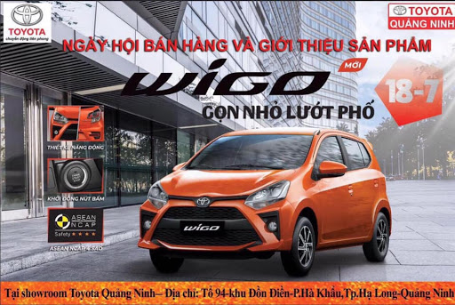

Được Đảng Cộng sản Việt Nam và Chủ tịch Hồ Chí Minh vĩ đại sáng lập, lãnh đạo, lại được rèn luyện qua nhiều thời kỳ đấu tranh cách mạng, đặc biệt là vào các thời điểm bước ngoặt khi vận nước lâm nguy, cả dân tộc phải đối diện với hoạ xâm lăng, hoặc vào thời khắc phải kịp chuyển mình đổi mới để tiếp tục phát triển đi lên, tổ chức Đoàn Thanh niên Cộng sản Hồ Chí Minh đã luôn kiên định bản lĩnh chính trị, giữ vững vai trò là đội quân xung kích cách mạng, luôn dấn thân vào những nơi gian khổ, dám đón lấy những nhiệm vụ khó khăn và sẵn sàng vượt qua mọi thử thách, cùng với cả dân tộc làm nên những chiến thắng lịch sử, giành trọn vẹn độc lập và thống nhất Tổ quốc, đưa cả nước tiến vào kỷ nguyên mới, kỷ nguyên độc lập dân tộc và đi lên chủ nghĩa xã hội.
